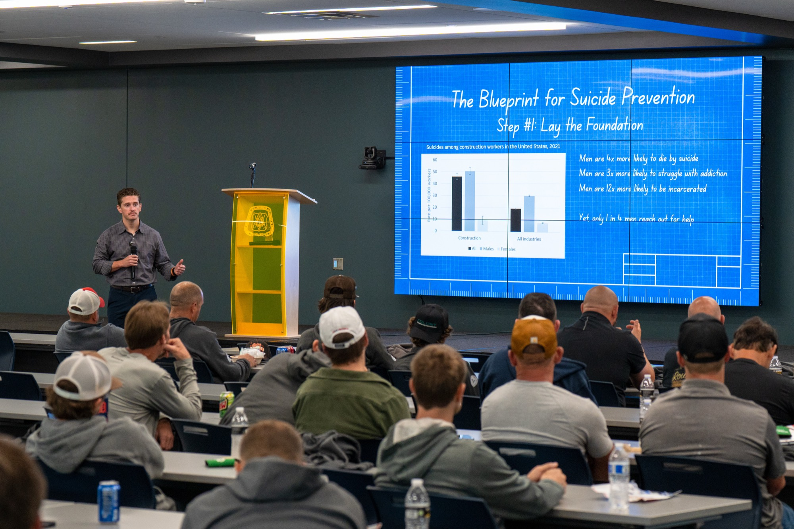
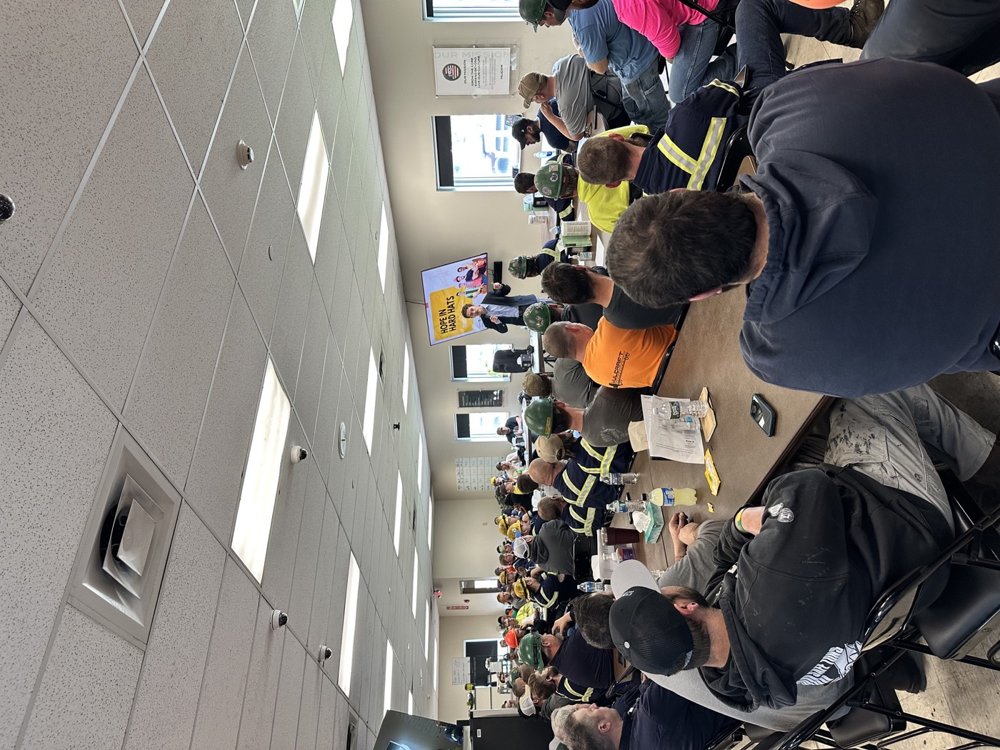
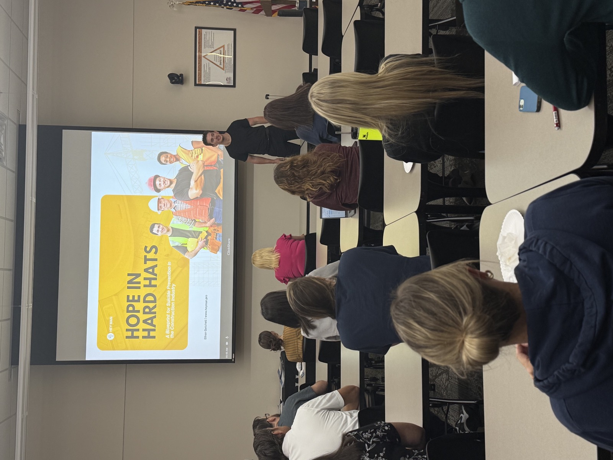
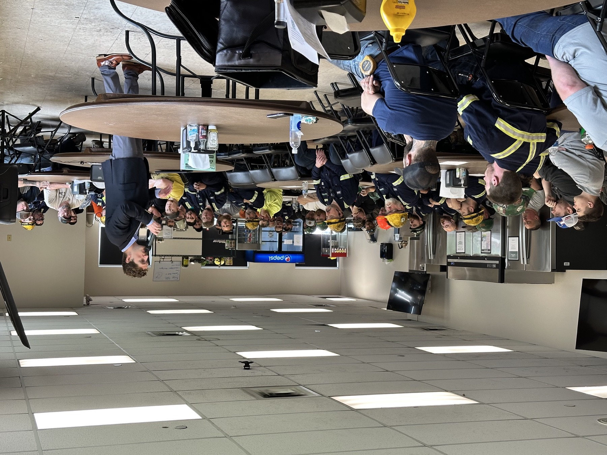
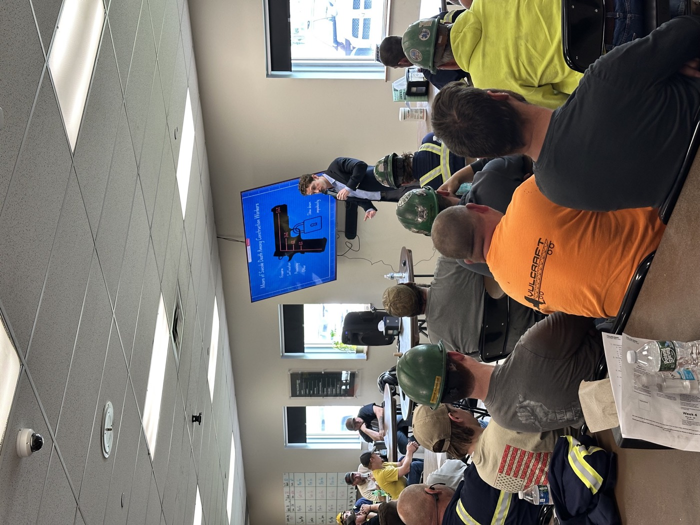

Hope in Hard Hats.
A keynote and training on suicide prevention built for construction crews, by someone who grew up on the job site and trained in the clinic.

You've watched good men go quiet.
You felt the weight of knowing something was wrong and not knowing what to say. You're not alone in that. And there is a way through it.
Construction has one of the highest suicide rates of any industry. The crews know it. Most leaders don't know what to say, because nobody ever gave them the words. A poster by the time clock and an EAP number in the handbook aren't going to change that. One conversation, done right, will.
I come from three generations of construction workers. In 2022 I lost my 16-year-old brother Austin to suicide. That loss took me out of the trades and into social work, where I now help men navigate the same things my family faced.

Break room · safety meetingNot inspired and forgetful. Ready.
Real tools, real language, and a clear next step they can use that same week.
- How to recognize when a coworker is struggling, before it becomes a crisis.
- What to actually say when a guy goes quiet, and what not to say.
- Simple steps to make psychological safety part of every toolbox talk and safety meeting.
- A story that reframes vulnerability as strength, told by someone the room can see themselves in.
- Follow-up tools so the conversation keeps building after I leave.
Pick the room. I'll build the talk around it.
Every engagement is purpose-built for your crew, your culture, and your goals. Nothing off the shelf.
Keynote
Hope in Hard Hats, 45–75 minutes. All-hands, safety stand-downs, company meetings, conferences. The full story and the framework, for a room of any size.
Best for: starting the conversation across a whole company.
Workshop
A half or full day for foremen, superintendents, and safety leads. Hands-on practice with the hard conversations, scenario work, and a plan your leaders write themselves.
Best for: the people who carry the crew.
Ongoing training
A toolbox talk series. Short, recurring sessions on site, plus reinforcement resources between visits. Mental health becomes part of your safety culture, not a one-time event.
Best for: companies that want it to stick.
No complicated rollout. No lengthy onboarding.
Book a free call
One honest conversation about where your team is and what they actually need. No pressure. No pitch.
We build the right program
Keynote, workshop, or ongoing training, shaped around your crew, your culture, and your specific goals.
Your leaders walk away ready
Real tools, real language, a next step they can use that week, and follow-up resources so the support doesn't disappear when the talk ends.
This work started in construction. It travels.
Fathers have used these frameworks at home. Young men have used them to take a first step they'd been putting off for years. Schools, honor societies, and co-ops have booked these:
Breaking the Silence
Why vulnerability is leadership, and how to model it without losing the room.
What Really Matters
Turning pain into purpose. The story of Austin, and what a letter to a brother taught me about grief and hope.

Also for the office side"Ethan was able to leverage his unique background and personal story and tailor it specifically to the construction industry, and to men in particular. His speech was a turning point for our organization and demonstrated help is out there. Please select Ethan for your next event. You will not regret it."
- Clark Contracting Services
- HomeWorks Tri-County Electric
- Ionia County ISD
- Youth Mental Health Summit
- Construction Mental Health & Wellbeing Conference (USSI)
- Helical Drilling
- Vulcraft


Things people ask. Honest answers.
We've done mental health talks before and nothing changed. Why would this be different?
Will my crew actually engage, or tune it out?
What happens after the talk?
Our leaders aren't comfortable talking about mental health. Is this still for them?
We recently lost someone. We want to do something but don't know what.
What if someone on our team is in crisis right now?
Book Ethan for your next safety meeting.
Help your team start the conversation. One call is all it takes to find out if this is the right fit.